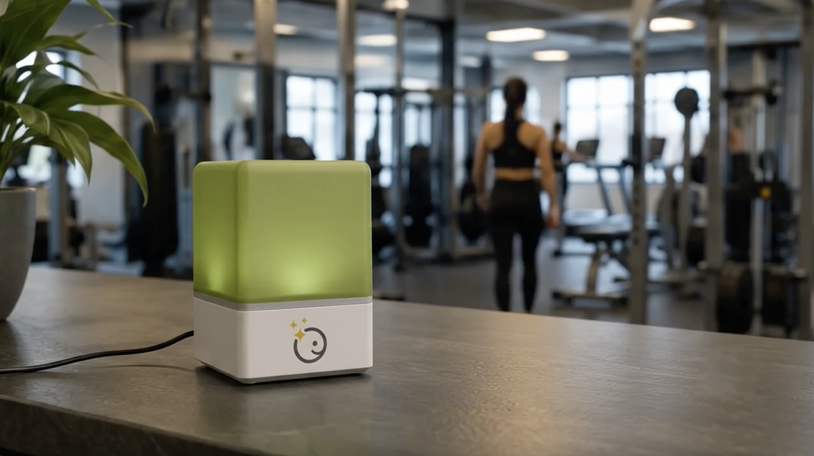

Elige la variable
- Energía
- CO2
- Dinero
- Agua
- Gas
- Otros
Conectado a la plataforma Clickie, muestra con colores si una variable está dentro de lo esperado, necesita atención o requiere actuar.

Ubica el Lumi en un lugar visible para que el equipo lo vea y responda al momento.
Sigue operando normal.
Es momento de prepararse.
El equipo ya sabe qué hacer.
En un gimnasio, Lumi lee CO2 en tiempo real y alerta cuando es momento de abrir ventilacion para recuperar confort.
La señal está donde ocurre la operación.
Cualquier persona entiende qué hacer.
Permite actuar antes de que el problema crezca.
Definamos la variable, la señal y la acción para tu operación.
Déjanos tus datos y te contactamos.